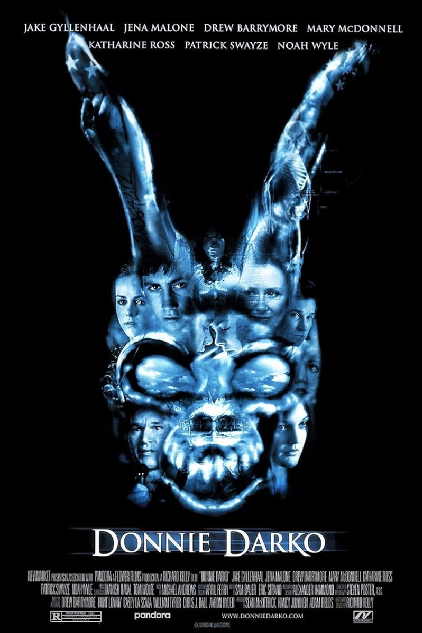

Donnie é um jovem inteligente que não se adapta bem aos seus colegas de escola. Após escapar de um acidente bizarro, ele passa a ter visões de um homem fantasiado de coelho gigante chamado Frank, que o alerta sobre o fim do mundo em 28 dias.